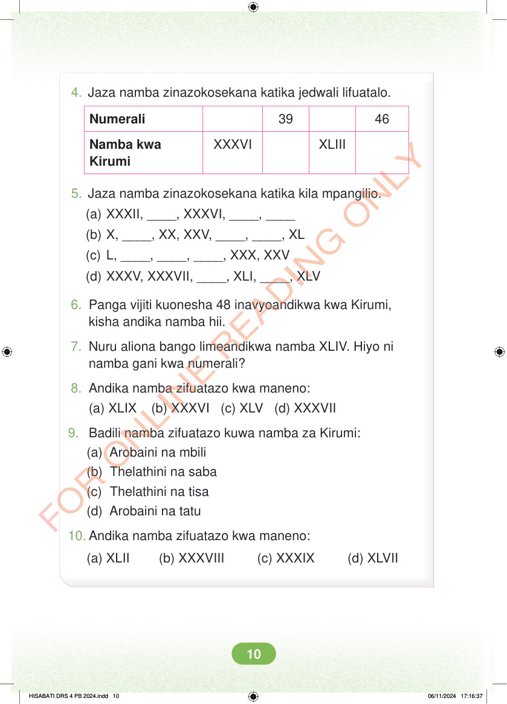

<!DOCTYPE html>
<html lang="sw-TZ"><head><meta charset="utf-8"><meta name="viewport" content="width=device-width,initial-scale=1">
<title>Hisabati: Kitabu cha Mwanafunzi Darasa la Nne</title>
<meta name="title-id" content="pg016_sec001"><meta name="page-section-id" content="16">
<link href="./content/tailwind_output.css" rel="stylesheet"><link href="./assets/libs/fontawesome/css/all.min.css" rel="stylesheet"><link href="./assets/fonts.css" rel="stylesheet">
<style>body{margin:0;background:#eef1ed}main{width:100%;display:flex;justify-content:center;padding:1rem 1rem 5rem;box-sizing:border-box}#content{width:100%;display:flex;justify-content:center}.pdf-page{position:relative;width:min(calc(100vw - 2rem),56rem);aspect-ratio:540.8980102539062/750.6610107421875;background:white;box-shadow:0 4px 24px #0002;overflow:hidden}.pdf-page img{position:absolute;inset:0;width:100%;height:100%;object-fit:fill}</style>
</head><body><main><h1 class="sr-only" id="page-heading">Ukurasa wa 16</h1><div id="content" class="opacity-0"><section role="article" data-section-type="pdf_accessible_page" data-section-id="pg016_sec001" aria-labelledby="page-heading" class="pdf-page"><p class="sr-only" data-id="pg016_gp001_tx001">4. Jaza namba zinazokosekana katika jedwali lifuatalo. Numerali 39 46 XXXVI XLIII Namba kwa Kirumi 5. Jaza namba zinazokosekana katika kila mpangilio. (a) XXXII, ____, XXXVI, ____, ____ (b) X, ____, XX, XXV, ____, ____, XL (c) L, ____, ____, ____, XXX, XXV (d) XXXV, XXXVII, ____, XLI, ____, XLV 6. Panga vijiti kuonesha 48 inavyoandikwa kwa Kirumi, kisha andika namba hii. 7. Nuru aliona bango limeandikwa namba XLIV. Hiyo ni namba gani kwa numerali? 8. Andika namba zifuatazo kwa maneno: (a) XLIX (b) XXXVI (c) XLV (d) XXXVII 9. Badili namba zifuatazo kuwa namba za Kirumi: (a) Arobaini na mbili (b) Thelathini na saba (c) Thelathini na tisa (d) Arobaini na tatu 10. Andika namba zifuatazo kwa maneno: (a) XLII (b) XXXVIII (c) XXXIX (d) XLVII HISABATI DRS 4 PB 2024.indd 10 HISABATI DRS 4 PB 2024.indd 10 06/11/2024 17:16:37 06/11/2024 17:16:37</p></section></div></main><div class="relative z-50" id="interface-container"></div><div class="relative z-50" id="nav-container"></div><script src="./assets/offline-preloader.js"></script><script src="./assets/scorm.js"></script><script src="./assets/base.bundle.local.js"></script></body></html>